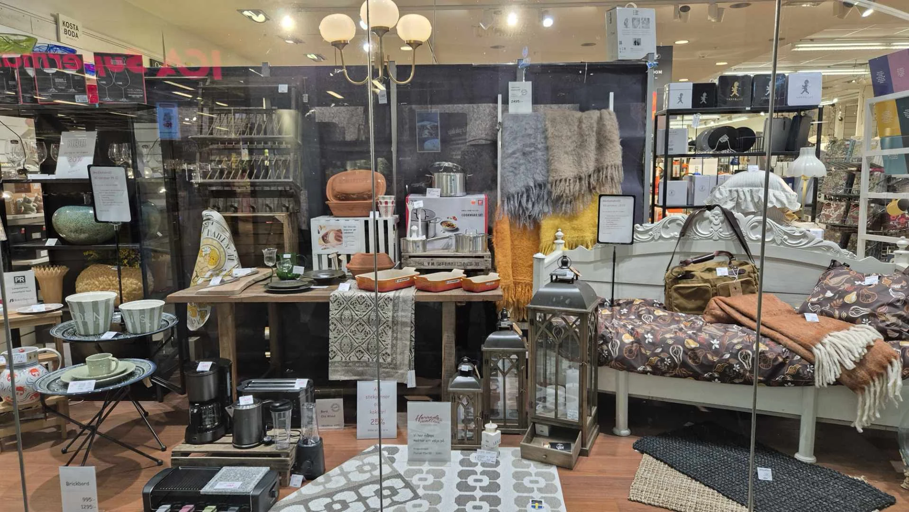
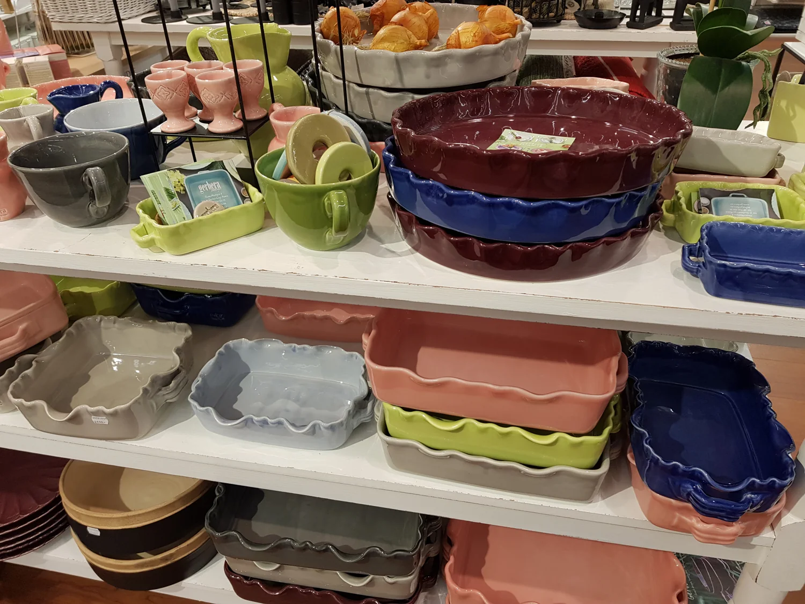
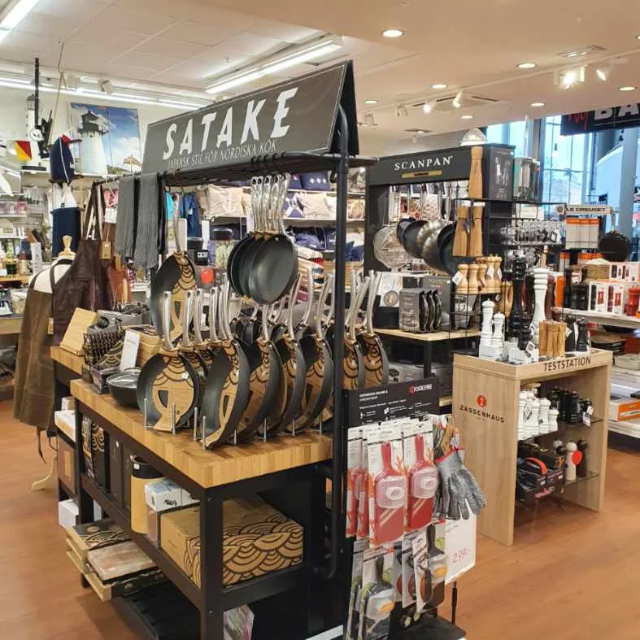
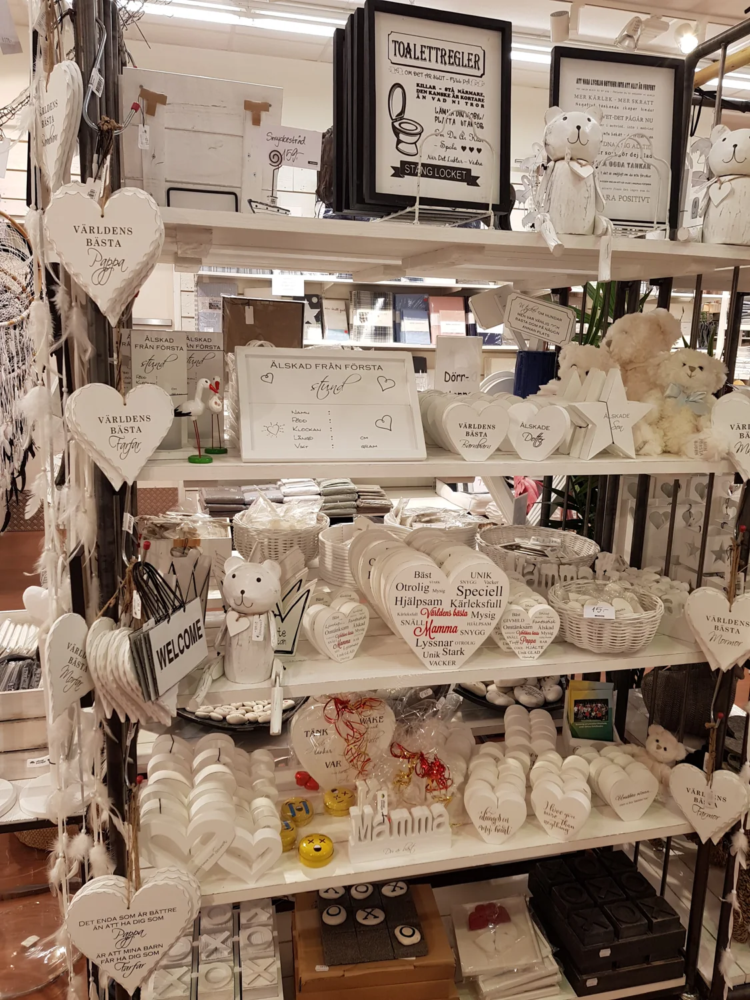
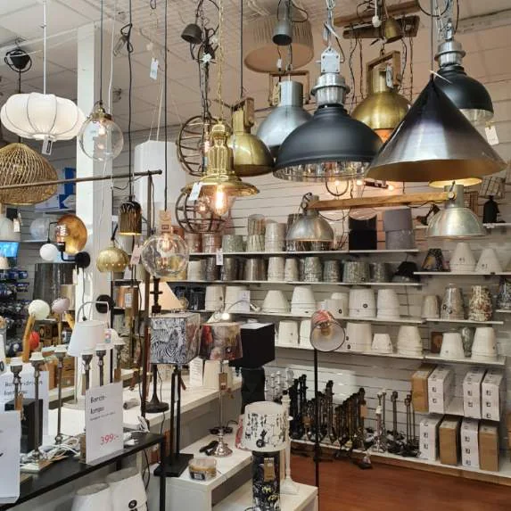
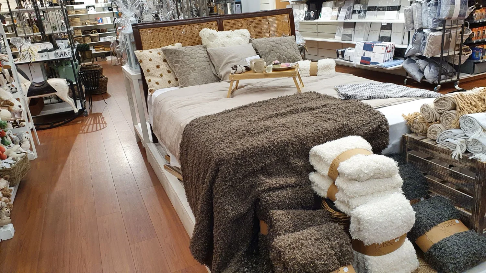
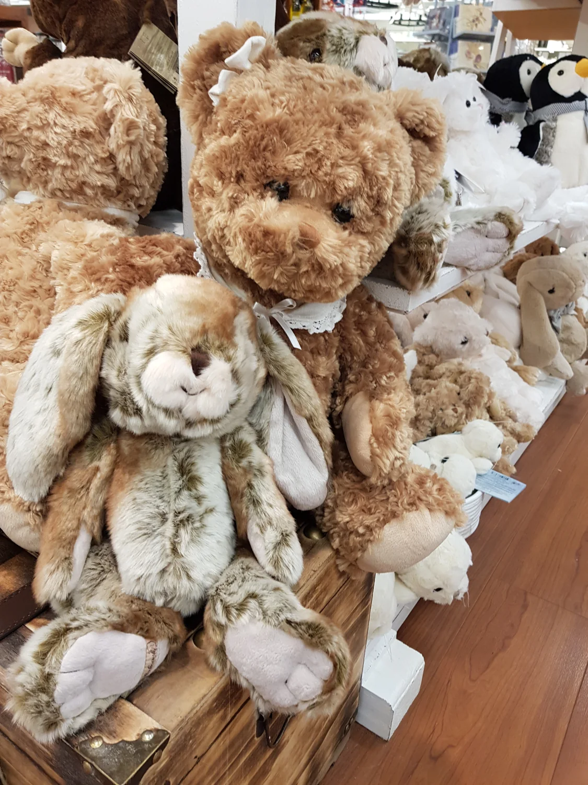
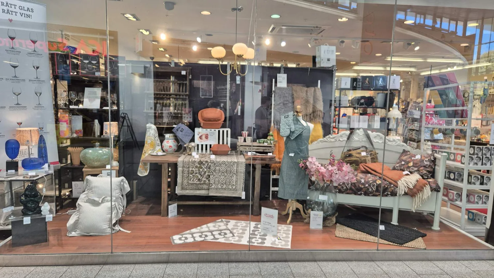

Älska att
vara hemma.
Inredning, kök och gåvor att tycka om.
Välkommen till Nybäddat Home i Åkersberga.
De fina sakerna.
Och allt du använder på riktigt.
Från den första koppen kaffe till middagen med vänner. Vi samlar köksfavoriter, heminredning och presenter som gör vardagen lite härligare.
Vad längtar ditt hem efter?

Dukning & glas
Duka för mer tid tillsammans.

Kök & matlagning
För glädjen i att laga mat.

Inredning
Det är detaljerna som gör det.

Belysning
Ett hem i sitt bästa ljus.

Textil & doft
Mjuka lager. Personlig känsla.

Presenter
Något fint. Till någon särskild.
Välkända namn. Nya favoriter.
Utforska våra varumärken
På nätet får du en känsla.
I butiken får du hela bilden.
Känn tyngden i grytan. Hitta rätt ton på porslinet. Upptäck något du inte visste att du letade efter.
Hos Nybäddat Home har hemmet stått i centrum sedan 2008. Välkommen in för inspiration och personlig hjälp.
Lär känna NybäddatEn liten tanke.
En väldigt fin present.
Vad tycker personen om? Börja där, så hittar vi något fint tillsammans.
Till den som gärna rör i grytorna.
En kniv från Global, en gryta från Le Creuset eller ett välvalt köksredskap. Upptäck gåvor som får användas ofta.
Upptäck kök & matlagningIdéer ur vårt sortiment. Fråga oss om vad som finns i butiken just nu.
Ta en sväng
förbi oss.
Du hittar oss på entréplanet i Åkersberga Centrum. Kom in för ett ärende, eller för att bara få lite nya idéer.
Välkommen inVi har öppet
- Måndag–fredag
- 10–19
- Lördag
- 10–17
- Söndag
- 11–17
Ordinarie öppettider. Helgdagar kan avvika.
Storängsvägen 4, Åkersberga